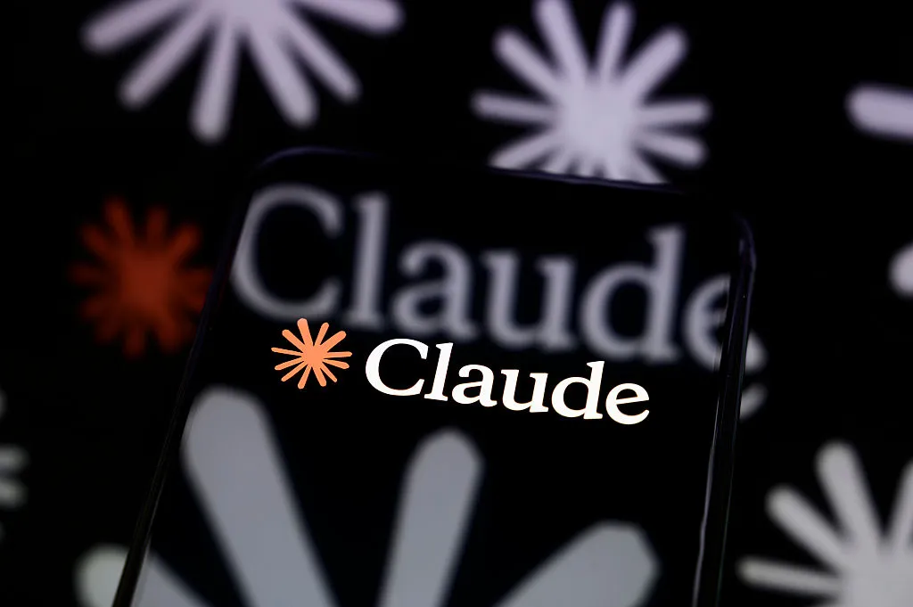
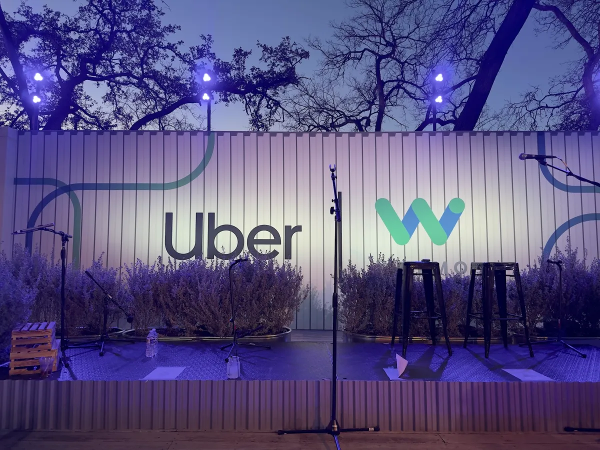
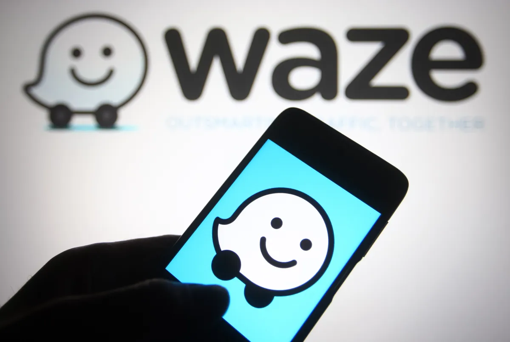
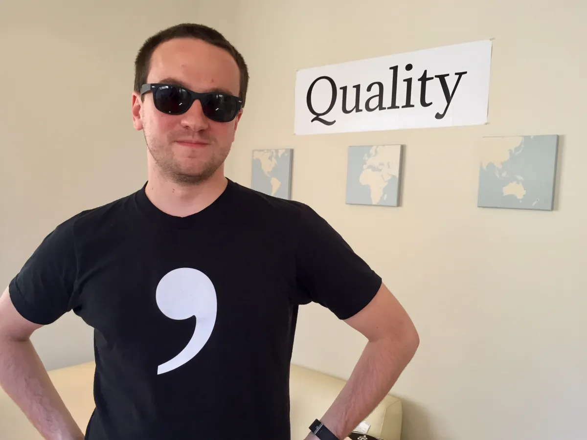
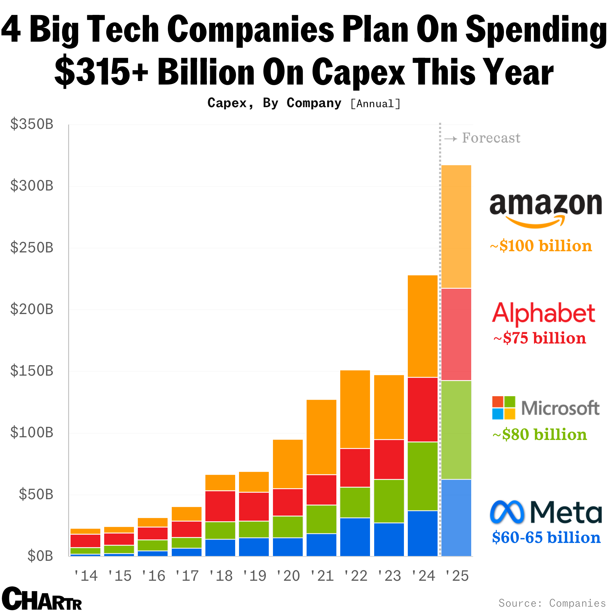
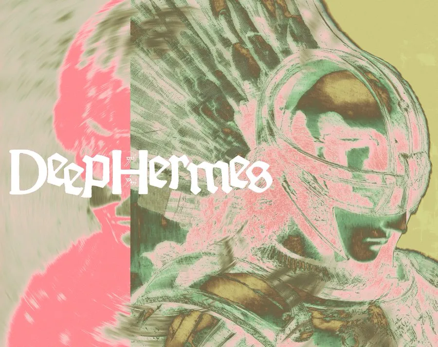
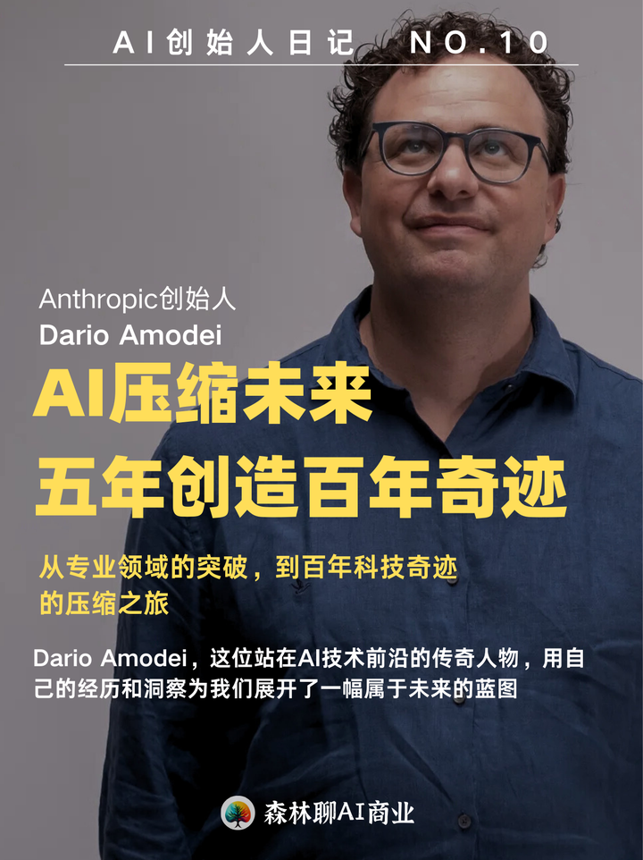
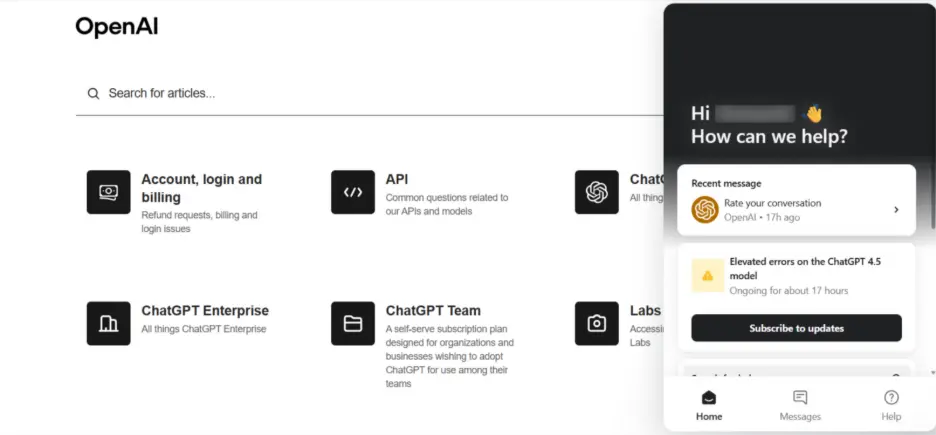

Janet 快车箱
AI Daily Briefing
2026-07-14
VOL 287
读者，早。
对中国创作者和企业来说，别再只问哪个模型最聪明。今天的信号更现实：渠道会决定获客成本，路由层会决定推理账单，合同和隐私条款会决定你的数据会不会被反过来训练成竞争对手。
接下来 2-4 周要盯三件事：OpenAI 和 Apple 的硬件诉讼会不会拖慢新设备，Anthropic 本地化定价能不能带动新兴市场付费，企业 AI 网关和自动化 agent 公司会不会继续拿到高估值。控制层先赚钱，模型层继续烧钱。

TechCrunch 在 7 月 13 日梳理了 Apple 对 OpenAI 的商业秘密诉讼。Apple 称 41 页诉状里包含前员工访问网络存储、带走机密硬件资料、以及 OpenAI 硬件团队向 Apple 人才索取样品和内部信息等指控。OpenAI 回应称无意获取其他公司的商业秘密。
TechCrunch 7 月 13 日报道，Microsoft CEO Satya Nadella 公开提醒企业警惕使用闭源 AI 模型时产生的数据和知识归属问题。他主张企业需要能在不同模型之间切换的 orchestration layer，并把“消费 intelligence 时创造出的 intelligence”留在自己手里。

TechCrunch 7 月 13 日报道，Anthropic 开始在印度显示 Claude 卢比定价。Claude Pro 年付折算约每月 2000 卢比，Claude Max 起价 11999 卢比，Team 计划每席起价 2399 卢比；印度是 Claude 除美国外最大的市场，约占全球使用量 5.8%。

TechCrunch 7 月 13 日报道，Washington, D.C. 的自动驾驶汽车法案成为 Uber 与 Waymo 的正面冲突点。Uber 反对允许纯 driverless 商业运营的方案，主张 robotaxi 应与人类司机共同运行在混合叫车网络里；Waymo 则支持开放自动驾驶部署许可。
TechCrunch 7 月 13 日报道，Los Angeles Police Department 将不再续签 Flock Safety 的车牌识别摄像头合同，理由是民权、隐私、数据收集和共享问题。Flock 在美国拥有至少 8 万台摄像头网络，多个城市此前也因隐私争议退出合作。

Artificial Analysis 在 7 月 13 日发布 GPT-5.6 Sol、Terra、Luna 的 intelligence vs cost 对比。其结论是 Luna 和 Sol 在各自 reasoning effort 下都优于 Terra：要么同等成本更聪明，要么同等能力更便宜；GPT-5.6 系列整体把 GPT-5.5 推出 Pareto frontier。
VentureBeat 7 月 13 日报道，ACRouter 会按任务自动选择合适模型，而不是每次都默认使用最强模型。报道给出的测试数字显示，完整任务运行成本为 13.21 美元，低于总是使用 Opus 的 34.02 美元，约节省 2.6 倍。

OpenAI Help Center 的 7 月 13 日 release notes 显示，ChatGPT 已重新在欧洲经济区的 WhatsApp 上可用。用户可通过官方 1-800-CHATGPT 联系人使用，不一定需要 ChatGPT 账号，并支持文字、图片、语音笔记、图像生成和多语言对话。

TechCrunch 7 月 13 日报道，Google 旗下 Waze 上线一批 AI 功能，包括用 Gemini 支持目的地语音搜索、对道路更新进行对话式上报、基于出行历史和城市交通理解的个性化导航，以及针对摩托车的 AI 路线模式。

TechCrunch 7 月 13 日评论了 George Hotz 对 AI alignment 的激进观点。Hotz 主张更本地、更贴近用户利益的 AI，而文章指出如果 AI 完全按用户要求行动，可能会越过社会安全边界，例如协助危险或违法行为。
TechCrunch 7 月 13 日报道，Sam Altman 与 Elon Musk 围绕太空数据中心隔空交锋。文章认为 SpaceX 明年发射具备高速数据处理能力的卫星并非不可能，但真正难点是大规模制造和部署，时间表更可能落在 2030 年代。
Barron's 7 月 13 日报道，BofA Securities 的 6 月数据显示，Google 全球网页访问同比增长 4% 至 28 亿，移动端日活增长 12%。与此同时，Gemini 网页流量增长超过四倍，移动用户增长 295%，并未明显吞噬传统 Google Search。

MarketWatch 7 月 13 日报道，Morgan Stanley 分析师 Brian Nowak 预计 Meta、Amazon、Alphabet、Microsoft 和 SpaceX 等巨头的 AI 资本开支将在 2027 年达到 1.2 万亿美元，2028 年达到 1.4 万亿美元。报告还提到 hyperscale compute capacity 到 2028 年可能增至 120GW。

TechCrunch 7 月 13 日报道，开源 Hermes agent 背后的 Nous Research 正在敲定新一轮融资，Robot Ventures 领投，USV 等参与，估值约 15 亿美元，融资额至少 7500 万美元。Hermes 在 GitHub 上约有 21.4 万 stars 和近 4 万 forks。
Barron's 7 月 13 日报道，Meta 在路易斯安那东北部的数据中心项目成本从原先约 270 亿美元扩至 500 亿美元，目标是把计算容量扩到 5GW。报道称 Meta 还希望到明年把总计算容量翻倍至 14GW。

The Times 7 月 13 日报道，Monzo 创始人 Tom Blomfield 将从 Y Combinator partner 职位休假，加入 Anthropic 支持 compute team。该团队负责模型训练所需的关键硬件和基础设施。

OpenAI 7 月 13 日更新显示，欧洲经济区用户可重新在 WhatsApp 使用 ChatGPT，通过 verified 1-800-CHATGPT 联系人开始对话。它支持文字、图片上传、语音笔记、图像生成和多语言使用，账号绑定为可选项但能获得更高额度。